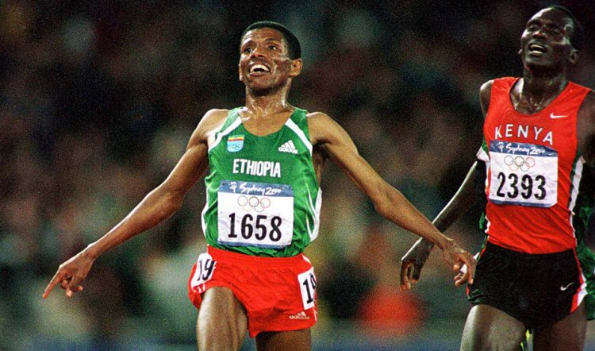

Widely considered as the greatest distance runner in history, with 27 world records.

Haile Gebrselassie wins the 10,000m at the Sydney 2000 Olympic Games.
Timeline of Haile Gebrselassie
1973 - Born in Asella, Arsi Province, Ethiopia
1992 - His big breakthrough on the international scene came in when he won the Junior world title at 5,000m and 10,000m.
1995 - He continued his dominance on the track and lowered the world record for both 5,000m and 10,000m.
1996 - His first Olympic success came, where he won gold in the 10,000m.
2000 - Haile became only the third man to successfully defend his 10,000m. title, narrowly beating Paul Tergat by a fraction after a blistering 200 metres.
2001 - Haile started to step up the distance and won the IAAF half marathon.
2002 - Completed his first marathon in London, where he finished third.
2004 - He attempted to become the first athlete to win three consecutive gold medals at the 10,000m. However, shortly before the Olympic games, he sustained an injury which prevented him from training. In the final, he came 5th, being eclipsed by compatriot – Kenenisa Bekele.
2007 - Haile won the Berlin marathon in a new world record time - 2:04:26.
2008 - He lowers the world record in the same Berlin Marathon to 2:03:59.
2013 - April, just before his 40th birthday, Haile won the Vienna half marathon in a time of 1 hour 1 minute.
2015 - Haile announced his retirement from competitive running after finishing 16th in the Great Manchester Run on 10th May. It brings to and end a 25-year career.
You need three things to win: discipline, hard work and, before everything maybe, commitment. No one will make it without those three. Sport teaches you that.
Haile Gebrselassie
If you are interested and want to learn more about the GOAT of distance running, read about him on his Wikipedia page.